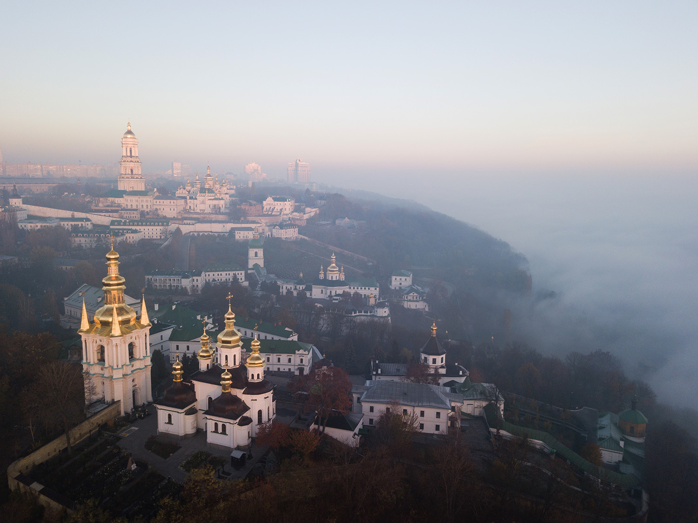

Світова спадщина ЮНЕСКО — це культурні та природні цінності, які вважаються надбанням усього людства. Кожен об’єкт Світової спадщини повинен відповідати хоча б одному з розроблених ЮНЕСКО культурних або природних критеріїв. Статус об’єкта Світової спадщини ЮНЕСКО додає гарантії збереження цього об’єкта, привертає до нього увагу влади та громади, дає пріоритет у залученні коштів для реконструкції і сприяє розвитку туризму.
Шедевр людського генія, винятковий для культурної традиції об’єкт, видатний приклад архітектурного або технологічного рішення певного періоду. Ці та інші критерії визначають список Світової спадщини ЮНЕСКО, зібраний з метою зробити популярними та зберегти унікальні в своєму роді об’єкти. Сім об’єктів в Україні, серед яких храми, давні ліси й історичний центр міста, належать до списку Світової спадщини ЮНЕСКО.
Україна є членом ЮНЕСКО з 1954 року. За цей час країна ініціювала низку міжнародних програм і проєктів
Київ:Ці два комплекси в нинішньому історичному центрі Києва представляють культурну спадщину Середньовіччя та ранньомодерного часу.
Софійський собор, або Софія Київська, зведено князем Ярославом Мудрим в XI ст., незабаром після хрещення Русі. Святиня символізувала становлення Києва як столиці християнського князівства і до XIII ст. була головною церквою Русі.
Собор Святої Софії є однією з головних пам'яток архітектури та монументального мистецтва початку XI ст., що впливала на проєктування та охдоблення храмів Київської Русі, а згодом і Східної Європи. Софія Київська відобразила зміни візантійських архітектурно-художніх традицій, які набули нового сенсу під впливом місцевого бачення. У соборі збереглися старовинні інтер'єри і найбільша колекція мозаїк та фресок того періоду. Богоматір Оранта — найбільший збережений образ часів Київської Русі, що прикрашає головний вівтар Софійського собору.
Києво-Печерська лавра — монастирський комплекс Української православної церкви, заснований 1051 року. Духовний та інтелектуальний вплив Києво-Печерської лаври сприяв поширенню православної культури і віри на Русі в період з XVII до XIX ст
Києво-Печерська лавра унікальна тим, що це архітектурний ансамбль двох унікальних підземних комплексів, монастирських будівель, сформований впродовж майже дев’яти століть, що показує зміни стилів в архітектурі, а також вдосконалення інженерних споруд. Тривалий час Києво-Печерський монастир був одним із найважливіших християнських культурних та паломницьких центрів у світі.
Ансамбль історичного центру Львова складається з основної частини, що охоплює Замкову гору, прилеглі території і середмістя, та собору святого Юра на Святоюрській горі.
Високий замок і Підзамче належать до найстарішої частини міста, розташованої у Львівській улоговині ще з V ст. До Підзамча примикає Середмістя, яке виникло у XIV ст. і є добре збереженим зразком східноєвропейського містобудування.
Високий замок і Підзамче — це Замкова гора з рештками замку XIII ст. та її околиці зі сформованою у XIII-XVII ст. системою вулиць і площ. Середмістя охоплює монастирі та резиденції епох ренесансу і бароко, парки, побудовані на місці середньовічних укріплень, а також споруди останніх двох століть.
Собор святого Юра — архітектурний ансамбль періоду бароко, розташований на пагорбі на південний захід від центру середньовічного міста. Собор будувався у XVIII ст. за ініціативою митрополита Атанасія Шептицького та під керівництвом німецького архітектора Бернарда Меретина.
Собор був центром Української греко-католицької церкви (УГКЦ), а також залишається головною пам’яткою епохи бароко у Львові, де поєднуються східно- та західноєвропейські традиції архітектури та мистецтва.
Це мережа опорних геодезичних пунктів, закладених протягом 40 років у XIX ст. астрономом Фрідріхом Вільгельмом Георгом Струве. Дуга довжиною 2820 км простягається через територію десяти європейських країн, від Баренцового до Чорного моря. Її південна межа знаходиться в Україні, на березі річки Дунай в селі Стара Некрасівка.
На основі вимірювань дуги 25-го меридіану вдалося майже точно визначити розміри і форму Землі. Цими результатами користувалися до кінця XX ст., їх змогли покращити лише завдяки сучасним супутниково-комп’ютерним дослідженням.
Архітектурний ансамбль у Чернівцях, збудований у XIX ст. під керівництвом чеського архітектора Йозефа Главки. Центр Буковинської православної митрополії за часів Австро-Угорської імперії.
Ця резиденція — взірець архітектури, дизайну і планування XIX ст. В її будівлях, зведених у дусі еклектики, поєднані елементи архітектури та мистецтва різних народів, які мешкали у цій місцевості. Резиденція відображає культурну ідентичність православної церкви в Австро-Угорській імперії.
Природний об’єкт світового значення, який спочатку охоплював заповідні карпатські території Пряшівщини в Словаччині і Закарпаття в Україні. Пізніше до нього приєднали лісові масиви Німеччини та ще дев’яти країн Європи (Австрії, Албанії, Бельгії, Болгарії, Іспанії, Італії, Румунії, Словенії, Хорватії).
До 2017 року до складу об’єкта входили шість лісових масивів, які охороняються в Карпатському біосферному заповіднику та Ужанському національному природному парку. Згодом приєднали ділянки національних природних парків «Синевир», «Зачарований край» і «Подільські Товтри» та природних заповідників «Ґорґани» і «Розточчя».
Букові праліси є взірцем недоторканих екосистем помірного кліматичного поясу, де зберігся цінний генофонд бука, а також найкращі умови для досліджень його еволюції.
Розташований вздовж північного краю Карпат українсько-польський об’єкт Світової спадщини, який поєднує гуцульський, галицький, бойківський і лемківський типи сакральної дерев’яної архітектури.
16 дерев’яних церков, з яких 8 знаходяться в Україні: Собор св. Архистратига Михаїла в селі Ужок і церква Вознесіння Господнього в селі Ясіня на Закарпатті, церква Різдва Пресвятої Богородиці в селі Нижній Вербіж, церква Зіслання Святого Духа в місті Рогатин, церква св. Юра в місті Дрогобич, церква Пресвятої Трійці в місті Жовква, церква Зіслання Святого Духа в селі Потелич та собор Пресвятої Богородиці в селі Матків у Галичині.
Це найкраще збережені дерев’яні церкви традиційного типу зрубів, завдяки яким можна дослідити історію архітектурного проєктування в Карпатському регіоні, а також православні традиції сакрального будівництва. Впродовж багатьох років дерев’яні конструкції церков ремонтували традиційними методами. Саме це зберегло їхню автентичність.
У південно-західному Криму, на території Севастополя збереглися залишки давнього міста-держави, довкола якого були сільськогосподарські околиці (хора). Херсонес Таврійський був класичним грецьким полісом з демократичною системою управління.
Об’єкт складається з двох основних частин: херсонеського городища — залишків античного міста Херсонеса Таврійського, заснованого наприкінці V ст. до н. е., і гераклейської хори — сільськогосподарської округи Херсонеса, розмежованої на окремі ділянки в ІV ст. до н. е.
Херсонес Таврійський був важливим політичним і економічним центром Північного Причорномор’я, де відбувався культурний обмін між Грецькою, Римською, Візантійською імперіями та населенням на північ від Чорного моря. Відіграв вирішальну роль у поширенні християнства в Південно-Східній Європі. Збережені елементи планування міста і хори за принципами Гіпподамової системи демонструють демократичну організацію земель давньогрецького суспільства.